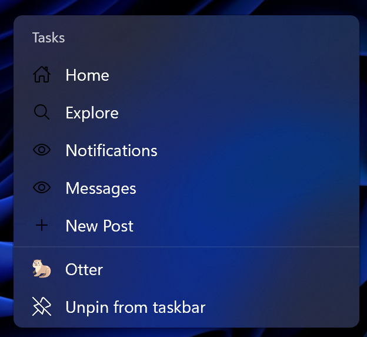
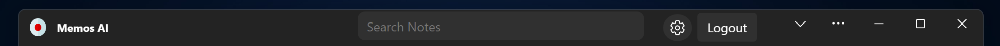

Upgrade your Progressive Web App
So, you are building a PWA (Progressive Web Application) and you really want to nail that "app" user experience. For example, you want your app to show in the share sheet to handle shared files, or you may want a custom titlebar for your app on desktop OS's. These are the kinds of small things that can really make or break your user experience. This also used to be a place where the web fell short of native platforms, but with the rise of Project Fugu over the last few years, that gap has closed fast. Let's explore just a few of the API's you can use to implement these features in your PWA.
Shortcuts #

The Web Shortcuts API is a feature that allows you to create shortcuts (basically links) to key actions or pages within your app. These shortcuts are displayed by the operating system when the user interacts with the app’s icon, such as right-clicking on Windows or long-pressing on Android. You define your shortcuts by using the shortcuts member in the web app manifest as shown in the snippet below. The shortcuts member is an array of objects, each representing a shortcut with a name, a URL, an optional description, and an optional icon.
"shortcuts": [
{
"name": "Home",
"url": "/",
"description": "Head straight to the home page",
"icons": [
{
"src": "assets/shortcuts/home-outline.png",
"sizes": "96x96",
"type": "image/png"
}
]
},
{
"name": "Explore",
"url": "/home?tab=search",
"description": "Head straight to the explore page",
"icons": [
{
"src": "assets/shortcuts/search-outline.png",
"sizes": "96x96",
"type": "image/png"
}
]
}
]
Share: Share content AND handle shared content #
Share content from your app #
The Web Share API is a feature that allows websites to share text, links, files, and other content using the native share UI of the device or desktop. This means that users can share content from your PWA to any other app, even native apps, just like they normally would, and without any kind of custom share UI. This API is also relatively simple to use, with only a few lines of JavaScript needed:
const shareData = {
title: "Web Share API",
text: "Learn how to use the Web Share API",
url: "https://docs.pwabuilder.com/#/home/native-features?id=web-share-api",
};
try {
await navigator.share(shareData)
}
catch(err) {
console.error(err)
}Handle content shared to your app #
To enable your PWA to handle content shared from other apps, such as files, you need to use the share target API. This makes your PWA show in the share sheet when, for example, a user shares a photo from the Photos app on their device, and allows you to take action to handle that shared content. This API is a bit more complicated to implement than the above APIs, with both an object you have to add to your Web App Manifest, and some JavaScript to handle the shared content in your own app. While this post will not act as a tutorial on how to implement this feature, the PWABuilder team at Microsoft has a great tutorial on how to implement this API.
Custom titlebar #

And finally, we are on to the Window Controls Overlay API. The Window Controls Overlay API allows you to customize the appearance and functionality of the title bar area of your PWA. By using this API, you can display your own HTML over the entire surface area of the app window, while retaining the system-wide controls. This is also a relatively simple API to implement, with a single object to add to your web app manifest to turn this feature on. You then can use CSS to style HTML in the titlebar area of your PWA. The Web Platform also exposes some system CSS variables to make implementing custom titlebars easier, such as:
titlebar-area-x: the distance from the left of the viewport where the title bar area appearstitlebar-area-y: the distance from the top of the viewport where the title bar area appearstitlebar-area-width: the width of the title bar areatitlebar-area-height: the height of the title bar area
For more on how to implement this feature, check out this tutorial.